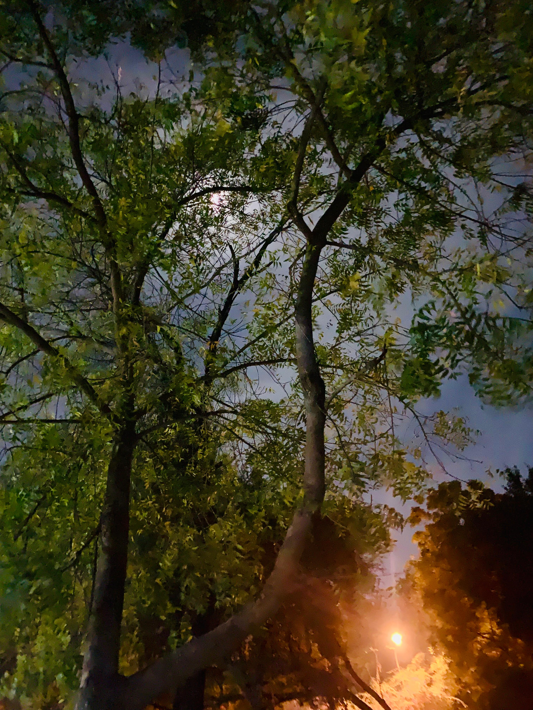

dharmik's homepage

about
i tinker. code at
github
.
find me at
@dharmik@linuxusers.in
.
my
digital garden
for more of my work and ideas.
contact
reach me,
dharmiik [at] proton [dot] me
posts
Notes on raycasting
. (dt: 28/02/2025)
PromoCraft at LJ Innovation Village
. (dt: 15/02/2025)
Conway's game of life
. (dt: 14/01/2025)
How to Install and Try React Without a Framework
. (dt: 02/01/2025)
Hosting a snac server (linuxusers.in)
. (dt: 14/11/2024)
Mirror a sr.ht repo to github using git mirror
. (dt: 27/09/2024)
Setting up my nvim
. (dt: 22/09/2024)
WTFathon - we hosted a hackathon
. (dt: 18/09/2024)
For computers
. (dt: 12/09/2024)
See pyscript in action
. (dt: 09/09/2024)
Blogmaker.java
(dt: 08/09/2024)
Run Flash in browser to play games
. (dt: 11/02/2024)
Found a letter
. (dt: 27/07/2023)